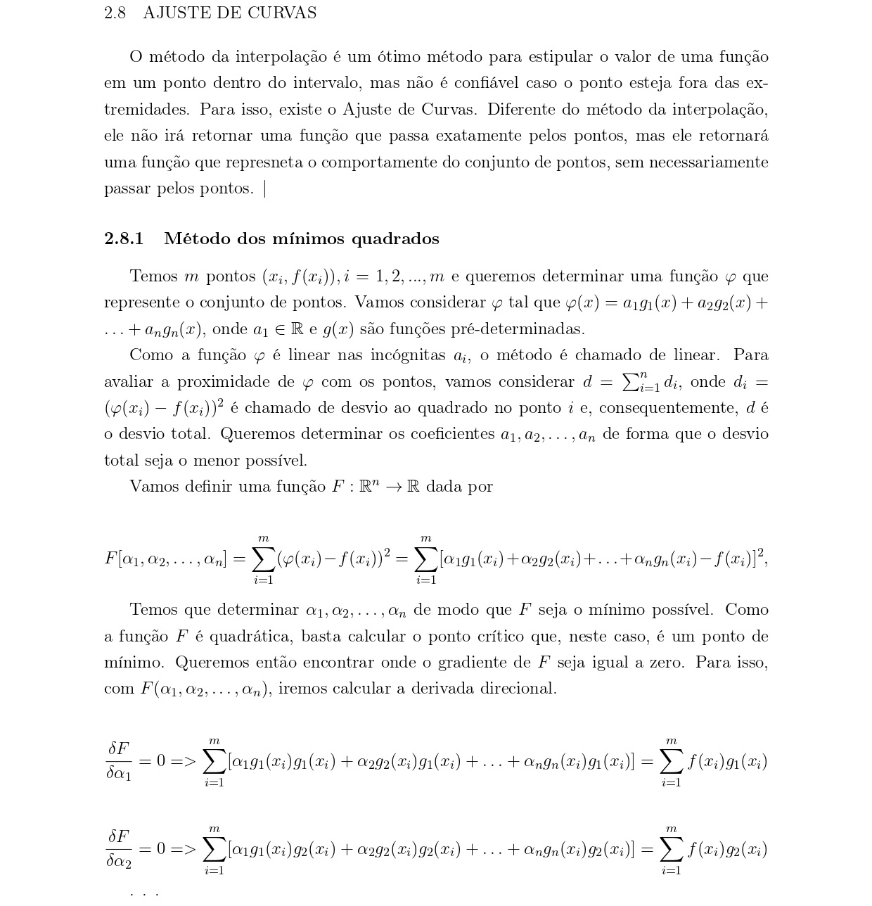
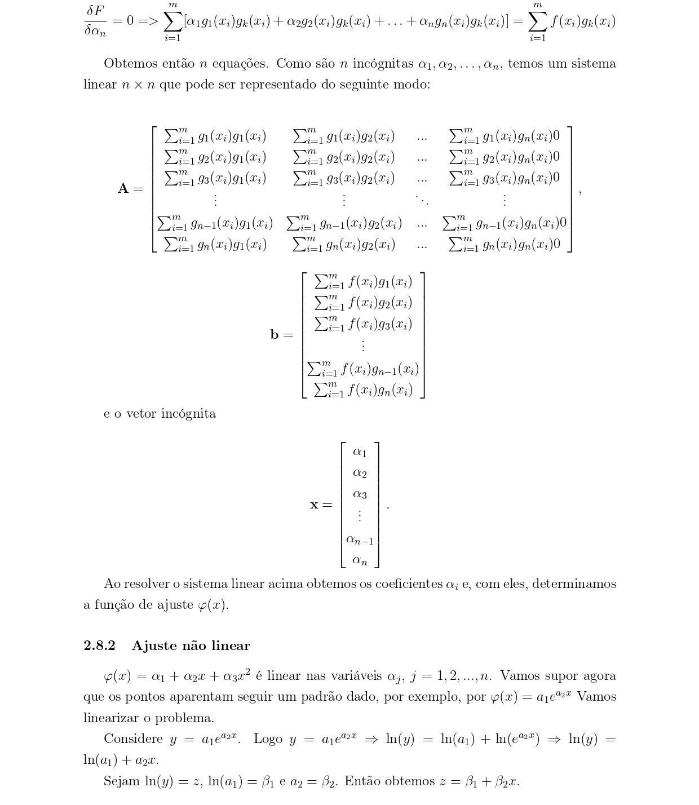
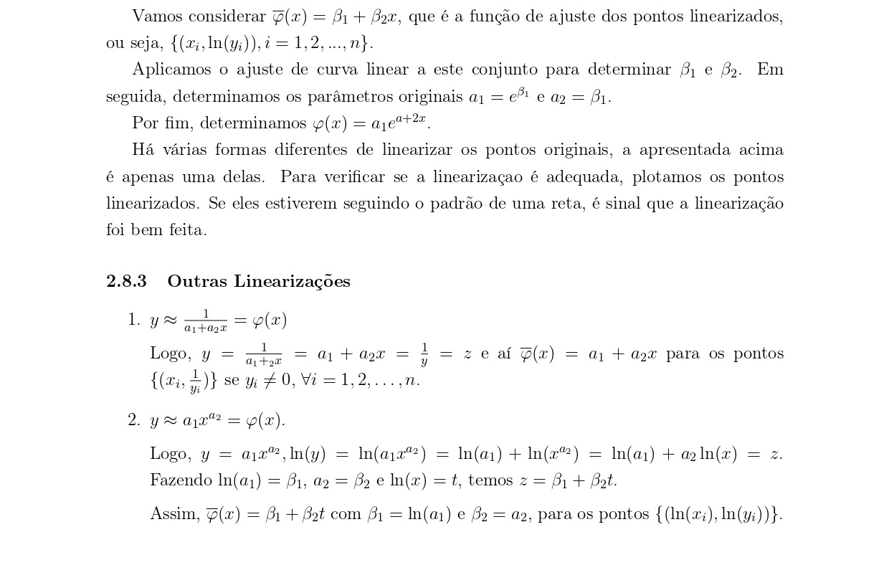

<div class="container" style="padding-top: 100px;">
    <div class="alert alert-danger only-mobile" role="alert">
        Esse site não foi feito para ser usado por este dispositivo, algumas funcionalidades podem ser comprometidas
    </div>
    <div style="text-align: center;">
        
    </div>
    <div style="text-align: center;">
        
    </div>
    <div style="text-align: center;">
        
    </div>
    <div style="text-align: center;">
        
    </div>
    <div style="text-align: center;">
        
    </div>
    <div style="text-align: center;">
        
    </div>

    <h2>
        Simulador
    </h2>

    <div class="input-section">
        <p>Intervalo do gráfico</p>
        <input class="input-ponto" type="number" [(ngModel)]="inicio"> até
        <input class="input-ponto" type="number" [(ngModel)]="fim">
        <br>
        <button class="btn btn-primary" style="margin: 10px;" (click)="plotar()">Plotar Gráfico</button>
    </div>

    <div class="input-section">
        <p>Insira os pontos</p>
        <label>Ponto:</label>
        <input class="input-ponto" type="number" [(ngModel)]="a1"> ,
        <input class="input-ponto" type="number" [(ngModel)]="a2">
        <br>
        <button class="btn btn-primary" (click)="adicionarPonto()">Adicionar</button>
    </div>
    <div class="points-container">
        <p>Pontos:</p>
        <span *ngFor="let ponto of pontos; let i = index" (click)="excluirPonto(i)">[{{ponto}}]</span>
    </div>
    <p></p>
    <label>Grau:</label>
    <input class="input-ponto" type="number" [(ngModel)]="grau">
    <button class="btn btn-primary" style="margin: 10px;" (click)="plotar()">Plotar Gráfico</button>
    <p>Polinômio resultante: {{polinomioResultante}}</p>
    <br />
    <span>para x = </span><input class="input-ponto" type="number" [(ngModel)]="valorDesejado" (change)="onChangeValorDesejado()" (keyup)="onChangeValorDesejado()"> f(x)= 
    <span>{{resultadoDesejado.toFixed(2)}}</span>
    <div class="row" *ngIf="calculado">
        <div class="col-md-10" style="min-height: 400px;">
          <div class="grafico-container">
            <app-grafico [x1]="listaX" [y1]="listaY" [pontos]="pontos" [canvasId]="'espaco1'"></app-grafico>        
            <div class="btn-container">
              <button class="btn btn-primary" (click)="mudarEscala(1)">+</button><br>
              <button class="btn btn-primary" (click)="mudarEscala(0)">-</button>
            </div>
          </div>
        </div>
      </div>

</div>
